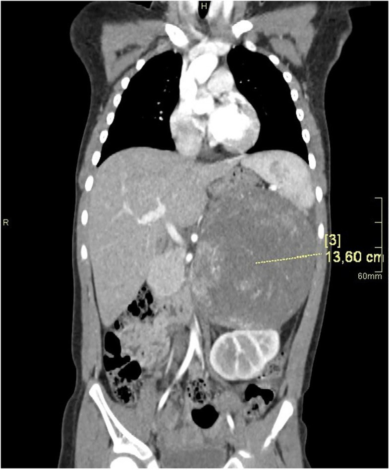
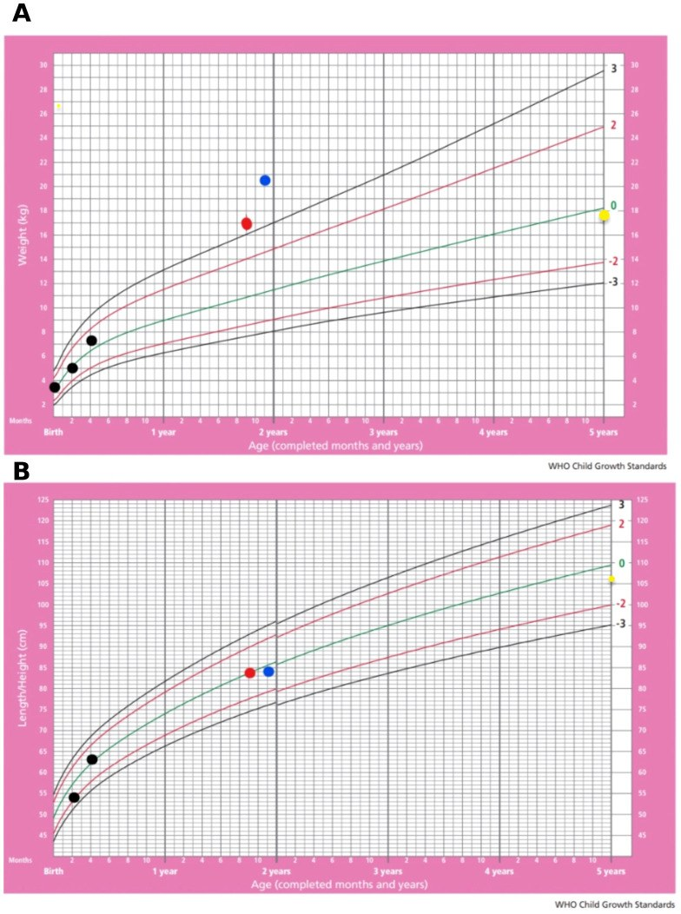

194 — Cushing do u vỏ thượng thận ở trẻ: chuẩn bị chu phẫu & theo dõi nội tiết sau cắt / Pediatric ACTH-independent Cushing syndrome: perioperative and postoperative endocrine management
Tags: pattern:khoi-thuong-than pattern:cushing pattern:nam-hoa pattern:suy-thuong-than vung:thuong-than vung:o-bung-nhi protocol:CT-bung-co-can-quang protocol:MRI-thuong-than score:COG-stage-ACC score:Wieneke incidentaloma:u-thuong-than
Mức chắc chắn (certainty): tổng hợp y văn (literature synthesis) — số liệu từ 2 ca nguyên văn có ảnh (PMC10702754, PMC13433170), 2 nghiên cứu nhiều trung tâm (IPACTR 254 bệnh nhi; COG ARAR0332, 78 bệnh nhi), 1 nghiên cứu hồi cứu 81 người lớn về phục hồi trục HPA sau cắt thượng thận và đồng thuận BSPED 2023 về liều hydrocortison ở trẻ.
Câu chốt: Cắt u vỏ thượng thận ở trẻ không kết thúc ở phòng mổ. Bệnh nhi đã bị ức chế trục dưới đồi–yên–thượng thận (HPA) từ trước, nên khi lấy nguồn cortisol đột ngột sẽ suy thượng thận cấp trong 24–72 giờ đầu nếu không bù steroid. Ngược lại, bù quá tay/giảm liều quá nhanh sẽ che mất tái phát và gây tăng đường huyết, chậm lành vết mổ. Vì vậy mỗi ca cần: liều stress chu phẫu theo cân nặng, theo dõi đường huyết–điện giải–huyết áp, lịch giảm liều, và đánh giá lại HPA + tăng trưởng–dậy thì–xương trong 2–3 năm.
1. Tổng quan bệnh học – cơ chế hình ảnh
- Vì sao trẻ có Cushing lại khác người lớn: Cushing không phụ thuộc ACTH (ACTH-independent) do bệnh vỏ thượng thận chiếm ~20% Cushing người lớn, 15% ở trẻ > 7 tuổi, nhưng ở trẻ nhỏ hơn có thể chiếm tới một nửa số ca (PMC3132884). Nghĩa là ở trẻ nhỏ, khối thượng thận là nguyên nhân hàng đầu, còn u tuyến yên ít gặp hơn.
- TẠI SAO cortisol thừa gây bệnh cảnh "béo + chậm cao": cortisol tăng tân tạo đường (gluconeogenesis) và kháng insulin → tích mỡ trung tâm, mặt tròn, gù trâu; đồng thời ức chế GH và IGF-1 + tăng hủy xương → cao chậm lại, tuổi xương trẻ hơn tuổi thật (dù androgen u tiết ra có thể làm tuổi xương tăng trong thể nam hóa). Trên biểu đồ tăng trưởng, đây là điểm phân biệt với béo phì đơn thuần: cân nặng vượt +2 SD nhưng chiều cao quanh 0 SD (ca PMC13433170: cân +2 SD, cao 0 SD).
- TẠI SAO u ngấm mạnh thì động mạch rồi thải thuốc: vỏ thượng thận là mô giàu mạch, u tuyến và ACC đều ngấm mạnh thì động mạch; khác biệt nằm ở kích thước – tính không đồng nhất – hoại tử – vôi hóa (chi tiết ma trận ở bài
193). Trên CT, ACC trẻ trung bình 9,9 cm so với u tuyến 4,4 cm (AUC 0,92), không đồng nhất gặp 13/14 ACC so với 2/9 u tuyến (OR 45,5) (Flynt, Pediatr Radiol 2015, dẫn trong bài193). - TẠI SAO cắt u gây suy thượng thận cấp: cortisol cao kéo dài ức chế CRH/ACTH, làm vỏ thượng thận bên đối diện teo và trục HPA "ngủ". Khi lấy u, cortisol tụt từ mức bệnh lý xuống 0 trong vài giờ — cơ thể không kịp đáp ứng stress phẫu thuật. Đây là lý do phải bù liều stress ngay lúc khởi mê, không chờ có triệu chứng.
- Thời gian hồi phục trục HPA (số liệu định lượng): ở 81 người lớn sau cắt thượng thận một bên vì tăng cortisol, trục HPA hồi phục trung vị 4,3 tháng (IQR 1,6–11,4); Cushing nặng 11,4 tháng so với Cushing trung bình 2,8 và tăng cortisol nhẹ (MACE) 2,1 tháng. Yếu tố dự báo hồi phục chậm: cortisol trước mổ > 10 µg/dL (9,7 so với 1,3 tháng), bệnh kéo dài > 1 năm (11,4 so với 2,8 tháng), mặt tròn (11,4 so với 2,2 tháng), teo cơ (13,1 so với 2,7 tháng) (PMC6246804). Ở trẻ, ca iMAD 23 tháng tuổi chỉ cần bù steroid 3 ngày sau mổ — tức dao động rất rộng, không được hứa trước với gia đình một mốc cố định.
- Bối cảnh dịch tễ – tiên lượng: IPACTR (254 bệnh nhi): 84,2% biểu hiện nam hóa, 5,5% Cushing đơn thuần, 83% cắt trọn u, sống không bệnh 5 năm 54,2% (PubMed 14990639). COG ARAR0332 (78 bệnh nhi): EFS 5 năm theo giai đoạn 86,2% (I) – 53,3% (II) – 81% (III) – 7,1% (IV); OS 95,2 – 78,8 – 94,7 – 15,6%; biến cố liên quan mitotane 10,5% (PMC8462560).
2. Mẫu hình + chẩn đoán phân biệt theo tuổi & kiểu nội tiết (gamut)
- A — Nhũ nhi/nhi nhỏ + Cushing đơn thuần, hình ảnh thượng thận "bình thường": nghĩ bệnh vi nốt thượng thận (isolated micronodular adrenal disease — iMAD) hoặc PPNAD/Carney. Ca 23 tháng: MRI thượng thận bình thường, chẩn đoán nhờ xạ hình ¹³¹I-NP-59 sau ức chế metyrapone (PMC13433170). Bài học: MRI bình thường không loại trừ.
- B — Trẻ 2–6 tuổi + nam hóa nhanh: u tuyến hoặc ACC tiết androgen; phân biệt tăng sản thượng thận bẩm sinh (CAH) thể không điển hình, u tế bào Leydig, u thượng thận lạc chỗ.
- C — Trẻ + Cushing + tăng huyết áp nặng: ACC thể hỗn hợp hoặc pheochromocytoma (khác hoàn toàn về xử trí — xem bài
195); phân biệt bằng metanephrine trước mọi can thiệp. - D — Trẻ + Cushing + khối lớn không đồng nhất: ACC (bài
193) — cần cắt trọn R0, không sinh thiết trước nếu mổ được. - E — Cushing "trung ương" (ACTH cao): u tuyến yên (Cushing disease) hoặc tiết ACTH lạc chỗ — hình ảnh thượng thận là tăng sản hai bên đối xứng, không có khối thống trị.
- Gợi nhớ "4 nhóm theo ACTH": ACTH thấp + một khối (u tuyến/ACC), ACTH thấp + hai bên (iMAD/PPNAD/BAH), ACTH cao + tuyến yên (Cushing disease), ACTH cao + ngoài yên (lạc chỗ).
3. Bảng so sánh phân biệt (ma trận đối chiếu)
| Thực thể (entity) | Hình ảnh điển hình | Chốt vào (rule-in) | Chốt loại (rule-out) | Gợi ý xác nhận |
|---|---|---|---|---|
| U tuyến vỏ thượng thận | Khối < 4–5 cm, đồng nhất, ngấm đều, không hoại tử; thượng thận đối diện teo | Một khối nhỏ đồng nhất + ACTH thấp + cortisol không ức chế | Khối > 6 cm, hoại tử, vôi hóa, không đồng nhất → ACC | CT 3 thì; mô bệnh sau cắt (Wieneke) |
| ACC ở trẻ | Khối lớn (trung bình 9,9 cm), không đồng nhất, hoại tử, vôi hóa, ± huyết khối IVC | Khối lớn + nam hóa/Cushing + DHEA-S/testosteron rất cao, ACTH thấp | Đồng nhất, < 4 cm, không xâm lấn → u tuyến | CT/MRI bụng; COG staging; TP53 |
| iMAD / PPNAD (Carney) | Hai thượng thận bình thường hoặc hơi to, nhiều nốt nhỏ, không có khối thống trị | ACTH thấp + hai bên + MRI bình thường + xạ hình NP-59 hai bên | Một khối thống trị đơn độc → u | Xạ hình NP-59; gen PRKAR1A (PPNAD) |
| Tăng sản thượng thận bẩm sinh (CAH) | Hai bên to đối xứng, giữ hình; không khối | 17-OHP tăng + ACTH tăng + điện giải (hạ Na, tăng K) | ACTH thấp + một khối → u/hyperplasia nguyên phát | 17-OHP, CYP21A2 |
| Cushing disease (u tuyến yên) | Tuyến yên vi tuyến ≤ 10 mm; thượng thận tăng sản hai bên | ACTH cao/không ức chế + MRI yên có u + hai thượng thận to | ACTH bị ức chế hoàn toàn → nguồn tại thượng thận | MRI yên động; xoang đá dưới |
| Pheochromocytoma | Khối ngấm mạnh, có thể hoại tử; ± hạch | Metanephrine tăng + cơn THA | Cortisol/androgen tăng, metanephrine bình thường | Metanephrine trước can thiệp (bài 195) |

Bé gái 4 tuổi, dậy thì sớm + dấu hiệu Cushing: CT bụng mặt phẳng trước–sau, khối đặc lớn thượng thận trái 13,6 cm, không đồng nhất, đè đẩy thận trái xuống; mô bệnh là ACC. Nguồn: Frontiers in Endocrinology 2023 (PMC10702754), CC BY 4.0.4. Protocol chụp + phác đồ nội tiết chu phẫu
Hình ảnh (trước mổ):
- CT bụng 3 thì có cản quang là chuẩn: đo kích thước, HU không tiêm, tính đồng nhất, hoại tử, vôi hóa, xâm lấn tĩnh mạch chủ dưới. Trẻ nhỏ ưu tiên MRI nếu đã chụp nhiều lần (ALARA) — nhưng MRI bình thường không loại trừ iMAD (ca PMC13433170).
- X-quang tuổi xương (bàn tay trái) và DXA + đánh giá gãy đốt sống khi Cushing kéo dài: cortisol thừa gây loãng xương, gãy lún, hồi phục một phần sau khi chữa.
- Không sinh thiết khối thượng thận nghi PPGL; với ACC có thể mổ trực tiếp.
Chuẩn bị chu phẫu (kiểm soát trước mổ):
- Điều chỉnh huyết áp, đường huyết, hạ kali; dự phòng huyết khối tĩnh mạch (Cushing là trạng thái tăng đông); điều trị nhiễm trùng trước mổ.
- Không dùng liều stress sớm quá mức kéo dài — bù đủ trong ngày mổ, giảm nhanh sau đó theo lâm sàng.
Liều hydrocortison chu phẫu ở trẻ (BSPED 2023, PMC10646833):
- Khởi mê: hydrocortison 2 mg/kg IV (tối đa 100 mg); sơ sinh: 4 mg/kg IV.
- Duy trì: 1 mg/kg IV mỗi 6 giờ (tối đa 50 mg/lần); sơ sinh 2 mg/kg mỗi 6 giờ. Có thể truyền liên tục sau liều khởi mê.
- Suy thượng thận cấp (cấp cứu): hydrocortison IM/IV 25 mg (< 1 tuổi) · 50 mg (1–5 tuổi) · 100 mg (≥ 6 tuổi), lặp lại sau 6 giờ nếu còn sốc.
- Ngày ốm (sick day): tổng liều hydrocortison ~30 mg/m²/ngày chia 4 lần; liều thay thế thường 8 mg/m²/ngày, tối ưu tăng trưởng 10–15 mg/m²/ngày.
Sau mổ — theo dõi và giảm liều:
- 24–72 giờ đầu: theo dõi đường huyết (trẻ nhỏ dễ hạ đường huyết khi mất cortisol), Na⁺/K⁺, huyết áp, nước tiểu; hạ HA + hạ Na + tăng K + hạ đường huyết = suy thượng thận cấp.
- Giảm liều: từ liều stress xuống liều thay thế trong 2–4 ngày ở ca đơn giản; ca Cushing nặng/ACC cần giảm chậm theo tuần và giáo dục gia đình về sick day + ống tiêm hydrocortison dự phòng.
- Đánh giá trục HPA: đo cortisol 8 giờ sáng sau khi ngừng hydrocortison 24 giờ (tránh nhiễu xét nghiệm); nếu cortisol thấp, test ACTH (cosyntropin); dự kiến hồi phục trung vị 4,3 tháng, có thể > 1 năm ở ca nặng.
- Theo dõi dài hạn: cân nặng/chiều cao mỗi 3–6 tháng (bắt kịp tăng trưởng), tuổi xương, dậy thì, DXA sau 12 tháng; tầm soát tái phát bằng hình ảnh + xét nghiệm nội tiết.
- Nếu dùng mitotane (ACC): thuốc cảm ứng enzym gan, làm giảm nồng độ hydrocortison → tăng liều thay thế và dùng hydrocortison (không dùng dexamethason để theo dõi); theo dõi nồng độ mitotane.
flowchart TD
A[Trẻ có hội chứng Cushing + khối thượng thận] --> B[ACTH thấp? cortisol không ức chế?]
B -->|Có| C[CT 3 thì hoặc MRI: kích thước/hoại tử/xâm lấn]
C --> D{Khối lớn, không đồng nhất?}
D -->|Có| E[Nghi ACC: cắt trọn R0 + COG staging]
D -->|Không| F[Nghi u tuyến hoặc tăng sản: cân nhắc cắt một bên]
E --> G[Chuẩn bị: HA, đường huyết, K, dự phòng VTE]
F --> G
G --> H[Khởi mê: hydrocortison 2 mg/kg IV, tối đa 100 mg]
H --> I[Duy trì 1 mg/kg mỗi 6 giờ, tối đa 50 mg]
I --> J[Theo dõi đường huyết, Na, K, huyết áp 24-72 giờ]
J --> K{Ổn định?}
K -->|Có| L[Giảm dần về liều thay thế 8-15 mg/m2/ngày]
K -->|Không| M[Loại trừ suy thượng thận cấp và chảy máu]
L --> N[Đo cortisol sáng + test ACTH khi ngừng 24 giờ]
N --> O[Theo dõi tăng trưởng, tuổi xương, DXA, tái phát]
5. Biến thể bình thường và cạm bẫy
- Biến thể bình thường: thượng thận trái cao hơn phải, hình chữ V/Y, không dày > 5 mm ở trẻ lớn; tủy thượng thận không thấy trên CT thường; bóng thượng thận giả do lách/tĩnh mạch lách.
- Cạm bẫy 1 — "MRI bình thường nên loại trừ Cushing do thượng thận": sai. iMAD có MRI bình thường; phải dựa vào sinh hóa + xạ hình (PMC13433170).
- Cạm bẫy 2 — bù steroid quá tay rồi kết luận "không suy thượng thận": cortisol đo trong lúc đang truyền hydrocortison không đánh giá được trục HPA; phải ngừng 24 giờ trước xét nghiệm.
- Cạm bẫy 3 — cắt u xong là "khỏi": vẫn phải theo dõi tái phát (ACC giai đoạn II có EFS 5 năm chỉ 53,3%) và di căn phổi (ca u tuyến "lành" ở trẻ vẫn di căn phổi khi bỏ theo dõi — PMC11220538).
- Cạm bẫy 4 — nhầm béo phì đơn thuần với Cushing: béo phì có cao theo cân (cả hai +2 SD); Cushing có cân tăng, cao chững; thêm tăng HA, rạn da tím, yếu cơ.
- Cạm bẫy 5 — hạ đường huyết ở trẻ nhỏ sau mổ: cortisol là hormone đối kháng insulin; khi mất nguồn cortisol đột ngột, trẻ < 5 tuổi dễ hạ đường huyết — kiểm tra glucose mỗi 4–6 giờ trong 48 giờ đầu.
- Cạm bẫy 6 — dùng dexamethason "để bù" ở ca ACC dùng mitotane: dexamethason không theo dõi được bằng cortisol và không thay thế được liều hydrocortison cần thiết; ưu tiên hydrocortison.
6. Tự lượng giá — Blind Quiz
Ca 1 — Bé gái 4 tuổi, dậy thì sớm và mặt tròn. Nhìn ảnh trước, mô tả trước.
- Gợi ý lâm sàng: tăng cân nhanh, lông mu sớm, huyết áp cao; không dùng corticoid.
- Câu hỏi: (1) Mô tả khối và mối liên quan với thận/lách; (2) 3 chẩn đoán phân biệt; (3) xét nghiệm nào chốt nguồn cortisol?
Bấm để hiện đáp án (findings + chẩn đoán)
- Dấu hiệu: khối đặc 13,6 cm vùng thượng thận trái, không đồng nhất, có ổ giảm tỷ trọng (hoại tử), đè đẩy thận trái xuống và đẩy lách sang bên; không thấy tuyến thượng thận trái bình thường.
- Chẩn đoán: ung thư vỏ thượng thận (ACC) ở trẻ (mô bệnh: tăng sinh tế bào ác tính, hoại tử, xâm lấn mạch) — bệnh nhi có hội chứng Li–Fraumeni.
- Chốt nguồn cortisol: ACTH thấp, cortisol máu không ức chế với dexamethason, DHEA-S/testosteron tăng; sau đó CT/MRI bụng + mô bệnh.
- Xử trí: cắt trọn u + phân giai đoạn COG; chuẩn bị hydrocortison liều stress và theo dõi suy thượng thận sau mổ.
- Nguồn ảnh: Frontiers in Endocrinology 2023 (PMC10702754), CC BY 4.0.
Ca 2 — Bé gái 23 tháng, tăng cân nhanh, rậm lông, HA cao. Nhìn biểu đồ tăng trưởng.

- Câu hỏi: (1) Đọc vị trí cân nặng và chiều cao trên 2 biểu đồ; (2) kiểu này gợi ý gì so với béo phì đơn thuần? (3) nếu MRI thượng thận bình thường thì làm gì tiếp?
Bấm để hiện đáp án
- Dấu hiệu: (A) cân nặng tăng vọt lên +2 SD quanh 22 tháng; (B) chiều cao vẫn quanh 0 SD — cân tăng nhưng cao không tăng tương ứng.
- Ý nghĩa: kiểu "béo + chững cao" phù hợp Cushing, khác béo phì đơn thuần (thường cao vượt trung bình).
- Bước tiếp: sinh hóa (ACTH thấp, cortisol không ức chế, UFC tăng); nếu MRI thượng thận bình thường → xạ hình ¹³¹I-NP-59 sau ức chế metyrapone để tìm iMAD/PPNAD hai bên; ca này sau cắt thượng thận phải chỉ cần bù steroid 3 ngày, theo dõi 3 năm ổn định.
- Nguồn ảnh: Frontiers in Endocrinology 2026 (PMC13433170), CC BY 4.0.
Bài liên quan chéo
- 193 – Ung thư vỏ thượng thận ở trẻ: nam hóa/Cushing, COG, Wieneke & mitotane
- 092 – Suy thượng thận & suy tuyến yên do ức chế điểm kiểm soát miễn dịch quanh mổ
- 155 – Tổn thương thượng thận tình cờ
- 195 – Đột quỵ cấp ở bệnh nhân PPGL chưa cắt u
- 177 – Điều trị và theo dõi PPGL
Ảnh
images/194_cushing-tre_CT_PMC10702754-F2.jpg— Fig. 2 (CT bụng), CC BY 4.0.images/194_cushing-tre_bieu-do-tang-truong_PMC13433170-F2.jpg— Fig. 2 (biểu đồ tăng trưởng WHO), CC BY 4.0.- Nguồn, giấy phép và attribution từng ảnh:
images/CREDITS.md+sources.md.
Không dùng để chẩn đoán độc lập khi chưa có người hướng dẫn.